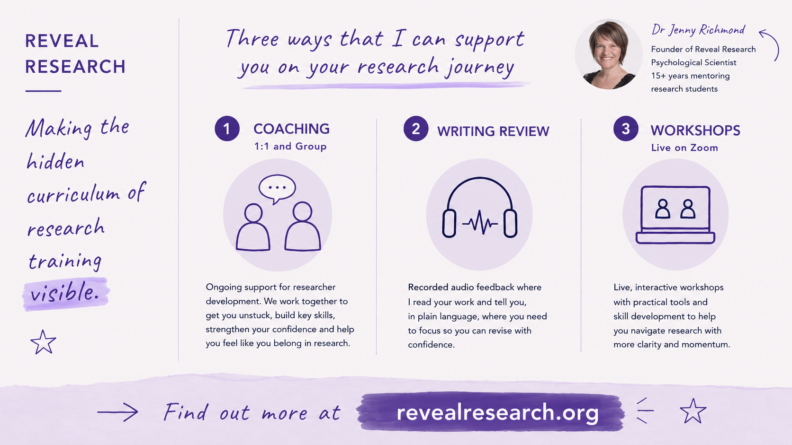
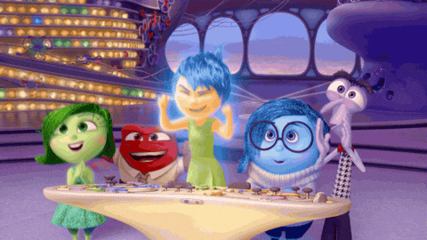
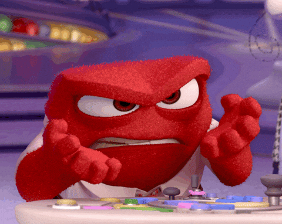
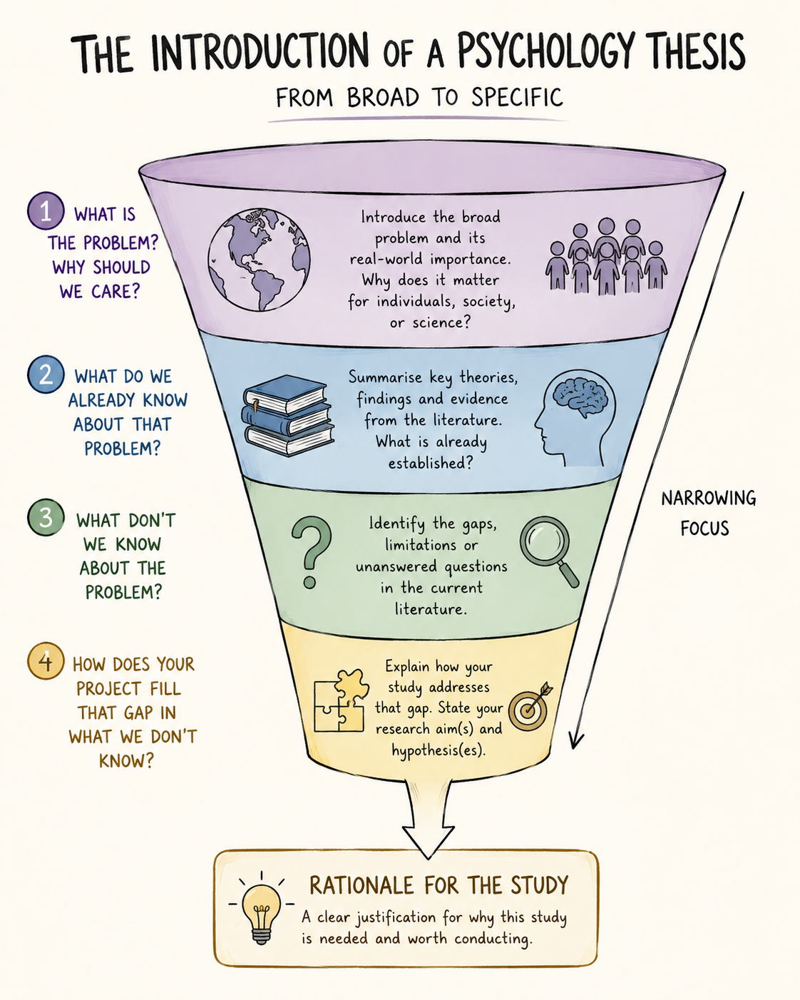
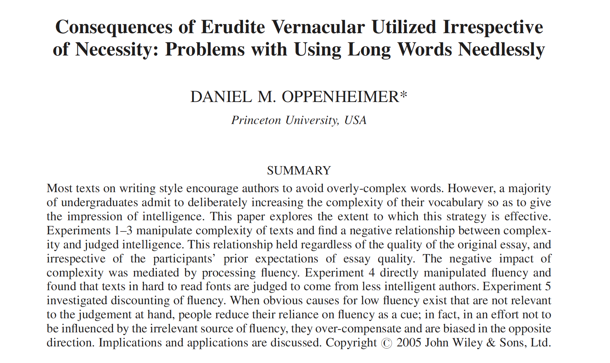

what they forgot to teach you about doing research
Make the moves your marker expects
These slides are available at…
Your job as a writer is to make my job as a reader as easy as possible

about me

Perceptual fluency
“the subjective feeling of ease or difficulty while processing perceptual information… more fluent processing results in positive assessments of perceptual stimuli”
“This thesis feels easy”

“This thesis feels difficult”

Your job as a writer is to make my job as a reader as easy as possible
You can create perceptual fluency for your reader via…
- structure
- words
- sentences
- paragraphs
structure
funnel shaped arguments are easier to follow

to do : structure
- plan your writing
- use an outline
- pick apart the structure of your writing once you are finished
- use a reverse outline
words
simple and concrete words make you sound smarter

word examples
Findings are consistent with theoretical propositions suggesting that passive consumption of idealized social comparison targets via digital media platforms exerts a deleterious influence on affective self-evaluative processes among adolescent populations.
Scrolling through social media made teenagers feel worse about themselves.
Analyses revealed a statistically significant interaction effect, indicating that the association between chronic occupational stressor exposure and burnout symptomatology was moderated by individual differences in dispositional emotion regulation capacity, with the effect being attenuated among those reporting higher regulatory efficacy.
Work stress predicted burnout, but only for people who struggle to manage their emotions.
to do: words
- write for your mum
- someone who is smart and interested but is not at all familiar with the topic
- choose simple/concrete words
- 3 syllables max
- use as few words as possible
- edit out the “fuzz”
- avoid jargon
sentences
active voice is easier to read than passive voice
In active voice, researchers conduct studies, collect data, and report findings. In passive voice, studies are conducted, data are collected, and findings are reported.
How do you know if your sentence is passive?
- there are no people in it doing the action
- you can add “zombies”
sentence examples
A significant reduction in cortisol levels was demonstrated to have been produced by the mindfulness intervention when pre- and post-treatment measurements were compared across the experimental and control conditions.
The mindfulness intervention reduced cortisol levels more than the control condition.
An examination of the data was conducted and a determination was made that the administration of the intervention had resulted in the facilitation of significant improvement in participants’ emotional regulation capacities.
We examined the data and found the intervention improved emotional regulation.
Helen Sword Zombie nouns
to do: sentences
Find the passive voice and put the subject back in the sentence. Look for…
- Informed consent was obtained by the research assistant
- A significant relationship was found…
- Participants were recruited…
- The implementation of the intervention involved the measurement of participant engagement throughout the duration of the investigation.
paragraphs
paragraphs are units of argument
Each paragraph contains JUST ONE idea.
Topic sentence
- gives away the point of the paragraph
Other sentences
- evidence
- examples
- explanation
1 : 5 : 25 rule (1 idea, ~5 sentences, no more than 25 words per sentence)
paragraph examples
A study conducted by Phillips and colleagues (2015) found that participants aged 65-86 performed significantly worse than younger groups on tasks assessing comprehension of sarcastic exchanges. Interestingly, there was no effect of age on the understanding of sincere exchanges (Phillips et al, 2015). Further, a meta-analysis across 23 theory of mind (TOM) studies showed that older adults performed worse on TOM tasks compared to younger groups (Henry, Phillips, Ruffman, & Bailey, 2013).
Much research has investigated social cognition in older people. For example, Phillips and colleagues (2015) found that while participants aged 65-86 had no problem understanding sincere exchanges, they found it more difficult to understand sarcastic exchanges than did young adults (Phillips et al, 2015). This result is consistent with a recent meta-analysis of theory of mind studies, which showed that older adults performed worse on TOM tasks compared to younger groups (Henry, Phillips, Ruffman, & Bailey, 2013).
As we age, our ability to understand how other people are feeling and what other people are thinking declines. For example, Phillips and colleagues (2015) found that while participants aged 65-86 had no problem understanding sincere exchanges, they found it more difficult to understand sarcastic exchanges than did young adults (Phillips et al, 2015). This result is consistent with a recent meta-analysis of theory of mind studies, which showed that older adults performed worse on TOM tasks compared to younger groups (Henry, Phillips, Ruffman, & Bailey, 2013).
to do : paragraphs
Are your topic sentences working hard enough?
Do they…
- each say something about a portion of the literature?
- hold the readers hand and link to what came before?
- together summarise your argument?
Take home message
You can create perceptual fluency using…
- structure
- words
- sentences
- paragraphs
… but the closer you are to your writing, the harder it is to see where it is not working
Writing Review
- audio feedback
- 48-72 hr turnaround
- $100 / 1000 words
- 25% off sale until June 1
- FAQs

questions… ask me anything
These slides are available at…
thanks for coming!
Join us for workshops in coming weeks…
- June 12
- Data Management for Beginners
- June 12
Interested in coaching or writing review?
- Book a free discovery call
www.revealresearch.org